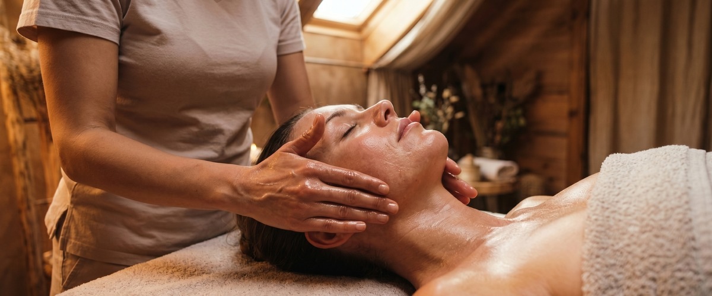

If tension collects in your jaw, temples, or the back of your neck, Thai facial massage in Greenock at Thai Massage Greenock addresses exactly that.

This is not a beauty treatment. It is a focused therapeutic session targeting the face, head, and neck — the areas that carry the most daily stress and often receive the least attention.
Thai facial massage is a traditional treatment that combines gentle stroking, rhythmic tapping, and targeted acupressure applied to the face, scalp, and neck. Rooted in the same principles as traditional Thai massage, it works along pressure points and sen energy lines to release tension held in the facial muscles, stimulate circulation, and restore a sense of calm throughout the head and upper body.
Unlike a standard facial, there are no products, peels, or procedures involved. The focus is entirely on touch: easing the muscles around the jaw, eyes, forehead, and temples, while working down into the neck and shoulders where tension commonly roots.
Thai facial massage is well suited to anyone who spends long hours at a screen, clenches or grinds their teeth, suffers from frequent tension headaches, or carries chronic tightness in the neck and jaw. It is also a good option for those who want the therapeutic benefits of a session without a full-body treatment, or who prefer to remain fully clothed. Clients across Inverclyde regularly book this treatment alongside a Thai foot massage for a focused, head-to-toe session.
Sessions typically last 30 to 60 minutes. You remain fully clothed throughout — no oils are used unless you specifically choose an oil-based treatment. Jariya begins with the neck and shoulders to release the tension that feeds into the face, then works methodically across the scalp, forehead, temples, eye area, cheeks, and jaw. Pressure is firm but responsive. You can guide how deep the work goes.
Most clients feel immediate relief from facial tightness and leave with a noticeable sense of calm. Regular sessions can help manage recurring jaw tension, stress-related headaches, and the physical effects of long days in front of a screen. You can book your Thai facial massage online and choose the session length that suits you.
At Thai Massage Greenock, Jariya is trained at Bangkok's renowned Wat Po temple, the birthplace of traditional Thai massage. Every session is personalised: she keeps notes between visits and builds on what she has learned about how your body holds tension. That continuity makes a real difference over time, particularly for clients managing ongoing jaw tightness, stress headaches, or neck pain.
No. Thai facial massage is performed fully clothed. You will be asked to remove any jewellery around the neck and ears, and to tie back your hair if it is long, but no other preparation is needed. It is one of the most straightforward treatments to arrive for.
Sessions run for 30 or 60 minutes. A 30-minute session focuses on the face, scalp, and neck. A 60-minute session allows Jariya to extend the work into the shoulders and upper back, which is particularly useful if neck tension is a recurring issue for you.
For many clients, yes. Tension headaches are frequently connected to tightness in the jaw, temples, and base of the skull. Thai facial massage works directly on these areas using acupressure and gentle mobilisation. Regular sessions can reduce both the frequency and intensity of headaches over time.
Most clients feel immediate relief in the jaw and forehead and leave feeling noticeably calmer. Some experience a light, slightly floaty feeling in the first hour. Skin often looks brighter due to improved circulation. It is worth allowing yourself some quiet time afterwards rather than rushing straight back to a screen.
A standard facial focuses on skin care: cleansing, exfoliating, and applying products. Thai facial massage is a therapeutic treatment with no products involved. The goal is to release muscle tension, improve circulation, and address stress held in the face, head, and neck. Think of it as massage for the face rather than skincare for the face.
For general tension relief and relaxation, once a month works well for most people. If you are dealing with chronic jaw tightness, regular headaches, or significant screen-related strain, Jariya may suggest fortnightly sessions initially. You can book your next appointment online or call 01475 600868 to discuss what schedule suits your needs.